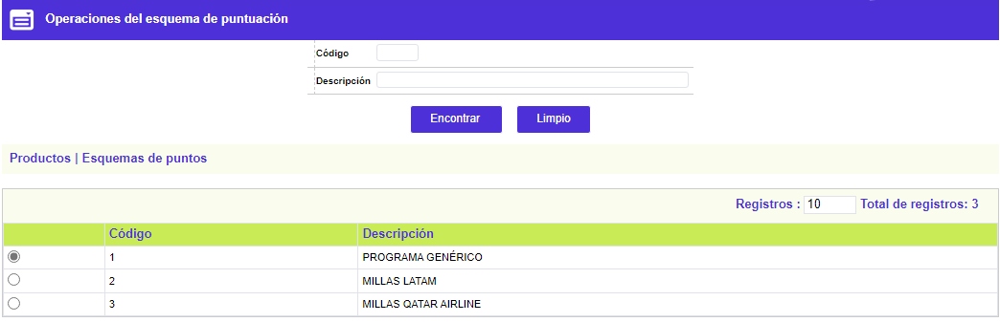
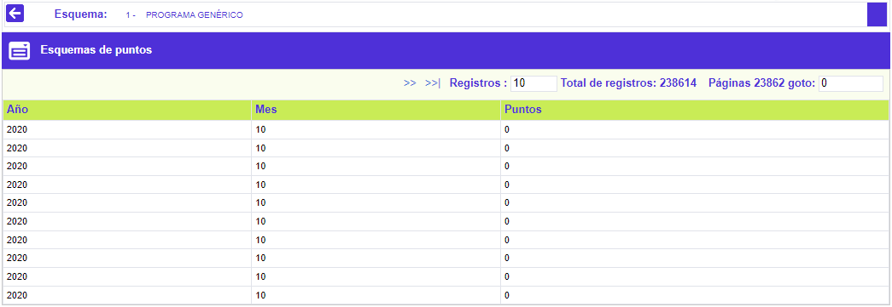
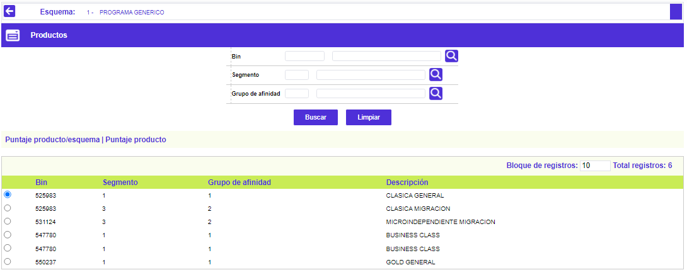
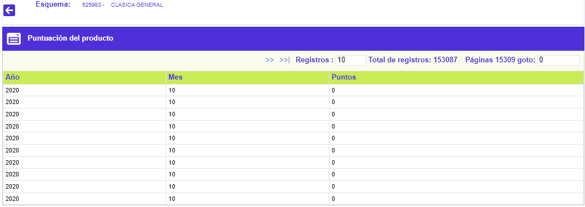
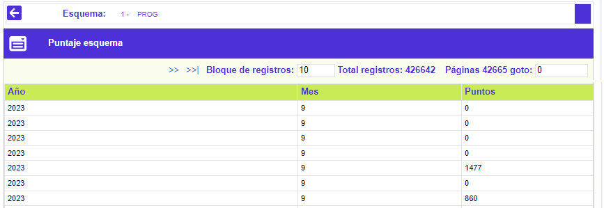

Comportamiento esquemas puntajes
Mediante esta función la entidad dispone de información estadística, correspondiente a los datos de los puntos obtenidos por producto con relación a los esquemas de puntaje definidos por la entidad, y obtenidos en cada periodo, por esquema y por producto.
Filtro: El formulario cuenta con un filtro inicial de búsqueda, con los campos Código y Descripción del Esquema a consultar. Adicionalmente, cuenta con los enlaces a las opciones Productos y Puntaje esquema.

Esquemas de puntos: Conjunto de campos que posibilitan conocer las estadísticas, mes/año, de los puntos otorgados por el sistema para cada esquema de puntaje, las que se muestran ordenadas cronológicamente empezando por las más recientes.

Descripción de Campos
|
Año |
Campo que contiene el año para el cual corresponden las estadísticas por Producto/Esquema que se muestran. |
| Mes |
Contiene el mes al que corresponden las estadísticas por Año/Producto/Esquema desplegadas. |
| Puntos |
Indica la cantidad de puntos obtenidos, durante ese mes/año, por el producto sobre el que se encuentre el cursor, sumando los obtenidos en todos los esquemas de puntaje en se encuentre definido el producto. |
Productos: Conjunto de campos que permiten visualizar los diferentes productos (bin, segmento y grupo de afinidad) incluidos o que hacen parte de cada programa o esquema de puntaje.
Cuenta con las opciones Puntaje producto/esquema y Puntaje producto:

Descripción de Campos
|
Bin |
Campo de salida, presenta el código correspondiente al prefijo o bin que conforma cada producto que hace parte de los diferentes esquemas de puntaje. |
| Producto |
Despliega el código correspondiente al segmento (otra de las características) que conforma cada producto que hace parte de los diferentes esquemas de puntaje. |
| Grupo |
Muestra el código correspondiente al grupo (de afinidad, otra de las características) que conforma cada producto que hace parte de los diferentes esquemas de puntaje. |
| Descripción |
Indica el nombre de cada producto que hace parte de los diferentes esquemas de puntaje. |
Puntuación producto/esquema: Conjunto de campos que posibilitan conocer las estadísticas, mes/año, de los puntos obtenidos por producto en todos los esquemas en los que haya sido incluido. El sistema despliega los datos ordenados cronológicamente empezando por los más recientes.

Descripción de Campos
|
Año |
Campo que contiene el año para el cual corresponden las estadísticas por Producto/Esquema que se muestran. |
| Mes |
Contiene el mes al que corresponden las estadísticas por Año/Producto/Esquema desplegadas. |
| Puntos |
Indica la cantidad de puntos obtenidos, durante ese mes/año, por el producto sobre el que se encuentre el cursor, sumando los obtenidos en todos los esquemas de puntaje en se encuentre definido el producto. |
Puntaje esquema: Conjunto de campos que posibilitan conocer las estadísticas, mes/año, de los puntos otorgados por el sistema para cada producto, cifras que aparecen ordenadas cronológicamente empezando por las más recientes.

Descripción de Campos
|
Año |
Campo que contiene el año para el cual corresponden las estadísticas por Producto/Esquema que se muestran. |
| Mes |
Contiene el mes al que corresponden las estadísticas por Año/Producto/Esquema desplegadas. |
| Puntos |
Indica la cantidad de puntos obtenidos, durante ese mes/año, por el producto sobre el que se encuentre el cursor, sumando los obtenidos en todos los esquemas de puntaje en se encuentre definido el producto. |